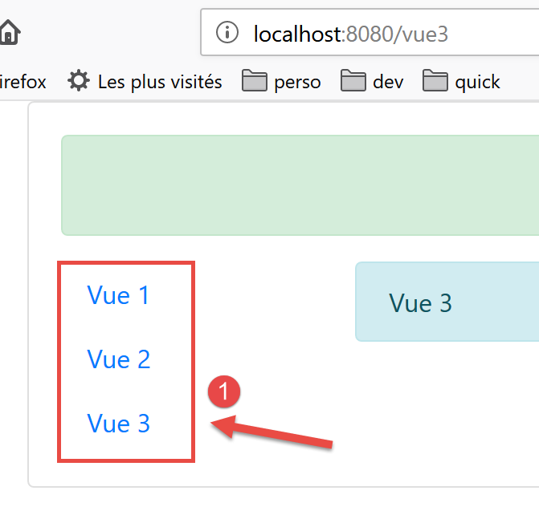
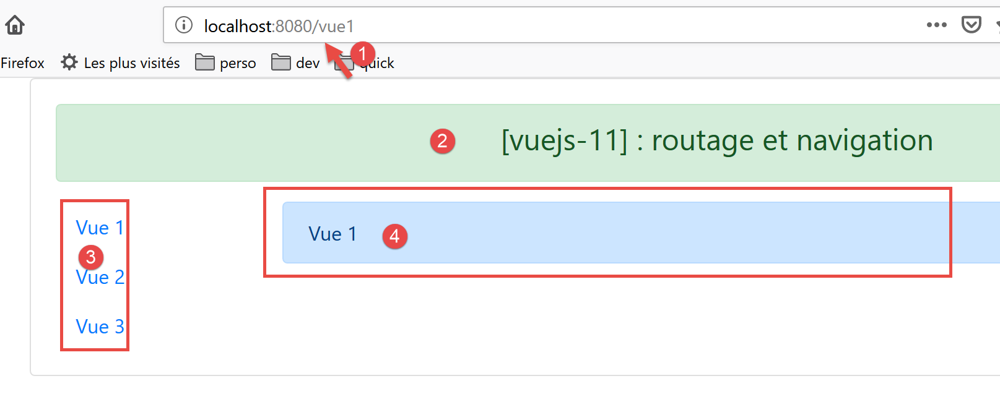
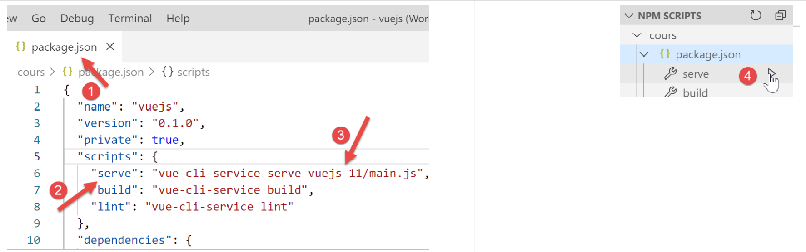

13. Progetto [vuejs-11]: routing e navigazione
Il routing è ciò che consentirà all’utente di navigare tra le diverse pagine dell’applicazione.
La struttura ad albero del progetto è la seguente:

13.1. Installazione delle dipendenze
Il routing in [Vue.js] richiede la dipendenza [vue-router]:

- in [1-3] si installa la dipendenza [vue-router];
- in [4-6], dopo l'installazione della dipendenza, il file [package.json] è stato modificato;
13.2. Lo script di routing [router.js]
Le regole di navigazione dell’applicazione sono contenute nel file [router.js] (il nome dello script può essere qualsiasi):
// importazioni necessarie per l'instradamento
import Vue from 'vue'
import VueRouter from 'vue-router'
// plugin di instradamento
Vue.use(VueRouter)
// componenti di destinazione del routing
import Component1 from './components/Component1.vue'
import Component2 from './components/Component2.vue'
import Component3 from './components/Component3.vue'
// i percorsi dell'applicazione
const routes = [
// home
{ path: '/', name: 'home', component: Component1 },
// Component1
{
path: '/vue1', name: 'vue1', component: Component1
},
{
// Component2
path: '/vue2', name: 'vue2', component: Component2
},
// Component3
{
path: '/vue3', name: 'vue3', component: Component3
},
]
// il router
const router = new VueRouter({
routes,
mode: 'history',
})
// esportazione dal router
export default router
Commenti
- lo script [router.js] definirà le regole di routing della nostra applicazione;
- righe 1-6: attivazione del plugin [vue-router] necessario per il routing. Tale attivazione richiede l’importazione della classe/funzione [Vue] (riga 2) e quella del plugin di routing (riga 3). Questo plugin è stato installato insieme alla dipendenza [router] che abbiamo appena installato;
- righe 8-11: importazione delle viste di destinazione del routing;
- righe 15-21: definizione della tabella delle rotte. Ogni elemento di questa tabella è un oggetto con le seguenti proprietà:
- [path]: l’URL della vista, ovvero quella che vogliamo venga visualizzata nel campo [URL] del browser. Siamo liberi di inserire ciò che vogliamo;
- [name]: il nome della rotta. Anche in questo caso è possibile inserire ciò che si desidera;
- [component]: il componente che visualizza la vista. In questo caso deve trattarsi necessariamente di un componente esistente;
Avremo quindi qui quattro route [/, /vue1, /vue2, /vue3].
- righe 33-36: il router è un’istanza della classe [VueRouter] importata alla riga 3. Il costruttore di [VueRouter] viene qui utilizzato con due parametri:
- le rotte dell’applicazione;
- una modalità di scrittura dei URL nel browser: la modalità predefinita [hash] scrive i URL nella forma [localhost:8080/#/vue1] (# è l’hash). La modalità [history] rimuove il simbolo # [localhost:8080/vue1];
- riga 39: si esporta il router;
13.3. Lo script principale [main.js]
Lo script principale [main.js] è il seguente:
// importazioni
import Vue from 'vue'
import App from './App.vue'
// plugin
import BootstrapVue from 'bootstrap-vue'
Vue.use(BootstrapVue);
// bootstrap
import 'bootstrap/dist/css/bootstrap.css'
import 'bootstrap-vue/dist/bootstrap-vue.css'
// router
import monRouteur from './router'
// configurazione
Vue.config.productionTip = false
// istanziazione progetto [App]
new Vue({
name: "app",
// vista principale
render: h => h(App),
// router
router: monRouteur,
}).$mount('#app')
Commenti
- riga 14: si importa il router esportato dallo script [router.js];
- riga 25: questo router è stato passato come parametro al costruttore della classe [Vue], che visualizzerà la vista principale [App], associata alla proprietà [router] della vista;
13.4. La vista principale [App]
Il codice della vista principale è il seguente:
<template>
<div class="container">
<b-card>
<!-- un messaggio -->
<b-alert show variant="success" align="center">
<h4>[vuejs-11] : routage et navigation</h4>
</b-alert>
<!-- la vista corrente dell'instradamento -->
<router-view />
</b-card>
</div>
</template>
<script>
export default {
name: "app"
};
</script>
Commenti
- riga 9: visualizza la vista corrente del routing. Il tag <router-view> viene riconosciuto solo se la proprietà [router] della vista è stata inizializzata;
13.5. L'impaginazione delle viste
L'impaginazione delle viste è gestita dal seguente componente [Layout]:
<template>
<!-- riga -->
<div>
<b-row>
<!-- area a tre colonne -->
<b-col cols="2" v-if="left">
<slot name="left" />
</b-col>
<!-- area a nove colonne -->
<b-col cols="10" v-if="right">
<slot name="right" />
</b-col>
</b-row>
</div>
</template>
<script>
export default {
// parametri
props: {
left: {
type: Boolean
},
right: {
type: Boolean
}
}
};
</script>
Abbiamo già utilizzato e illustrato questa impaginazione nel progetto [vuejs-06] del paragrafo [vuejs-06].
13.6. Il componente di navigazione
Il componente [Navigation] offre all’utente un menu di navigazione:

Il componente che genera il blocco [1] è il seguente:
<template>
<!-- menu Bootstrap a tre opzioni -->
<b-nav vertical>
<b-nav-item to="/vue1" exact exact-active-class="active">Vue 1</b-nav-item>
<b-nav-item to="/vue2" exact exact-active-class="active">Vue 2</b-nav-item>
<b-nav-item to="/vue3" exact exact-active-class="active">Vue 3</b-nav-item>
</b-nav>
</template>
- questo codice genera il blocco 1 composto da tre link che consentono la navigazione;
- l’attributo [to] dei tag <b-nav-item> deve corrispondere a una delle proprietà [path] delle rotte del router dell’applicazione;
13.7. Le viste
La vista n. 1 è la seguente:

Le aree [3-4] sono generate dal seguente componente [Component1]:
<template>
<Layout :left="true" :right="true">
<!-- navigazione -->
<Navigation slot="left" />
<!-- messaggio-->
<b-alert show variant="primary" slot="right">Vue 1</b-alert>
</Layout>
</template>
<script>
import Navigation from './Navigation';
import Layout from './Layout';
export default {
name: "component1",
// componenti utilizzati
components: {
Layout, Navigation
}
};
</script>
Commenti
- riga 2: la vista n. 1 utilizza il layout del componente [Layout] composto da due slot denominati [left, right];
- riga 4: il menu di navigazione è posizionato nello slot di sinistra. Si tratta dell’area [3] che si vede sopra;
- riga 6: nello slot di destra è inserito un messaggio. Si tratta dell’area [4] visibile sopra;
Le viste 2 e 3 sono analoghe.
Vista n. 2 visualizzata dal componente [Component2]:
<!-- vista n. 2 -->
<template>
<Layout :left="true" :right="true">
<!-- navigazione -->
<Navigation slot="left" />
<!-- messaggio -->
<b-alert show variant="secondary" slot="right">Vue 2</b-alert>
</Layout>
</template>
<script>
import Navigation from './Navigation';
import Layout from './Layout';
export default {
name: "component2",
// componenti della vista
components: {
Layout, Navigation
}
};
</script>
Vista n. 3 visualizzata dal componente [Component3]:
<!-- vista n. 3 -->
<template>
<Layout :left="true" :right="true">
<!-- navigazione -->
<Navigation slot="left" />
<!-- messaggio -->
<b-alert show variant="info" slot="right">Vue 3</b-alert>
</Layout>
</template>
<script>
import Navigation from "./Navigation";
import Layout from "./Layout";
export default {
name: "component3",
// componenti della vista
components: {
Layout,
Navigation
}
};
</script>
13.8. Esecuzione del progetto

All'esecuzione viene visualizzata la seguente vista:

- in [1], URL è [http://localhost:8080]. È stata quindi eseguita la seguente regola di instradamento:
{ path: '/', name: 'home', component: Component1 }
È stato quindi visualizzato il componente [Component1]. Esso mostra la vista n. 1 [2]. Ora clicchiamo sul link [Vue 1], il cui codice è il seguente:
<b-nav-item to="/vue1" exact exact-active-class="active">Vue 1</b-nav-item>
La visualizzazione diventa la seguente:
- in [3], è stata eseguita la seguente regola di instradamento:
path: '/vue1', name: 'vue1', component: Component1
È stato quindi visualizzato nuovamente il componente [Component1] e, di conseguenza, la vista n. 1 [4]. Ora clicchiamo sul link [Vue 2], il cui codice è il seguente:
<b-nav-item to="/vue2" exact exact-active-class="active">Vue 2</b-nav-item>
La nuova visualizzazione risulta quindi la seguente:

- in [5], è stata eseguita la seguente regola di instradamento:
path: '/vue2', name: 'vue2', component: Component2
È stato quindi visualizzato il componente [Component2] e, di conseguenza, la vista n. 2. Se ora clicchiamo sul link [Vue 3], il cui codice è il seguente:
<b-nav-item to="/vue3" exact exact-active-class="active">Vue 3</b-nav-item>
Otteniamo la seguente nuova vista:

- in [6], è stata eseguita la seguente regola di instradamento:
path: '/vue3', name: 'vue3', component: Component3
È stato quindi visualizzato il componente [Component3], ovvero la vista n. 3 [8].